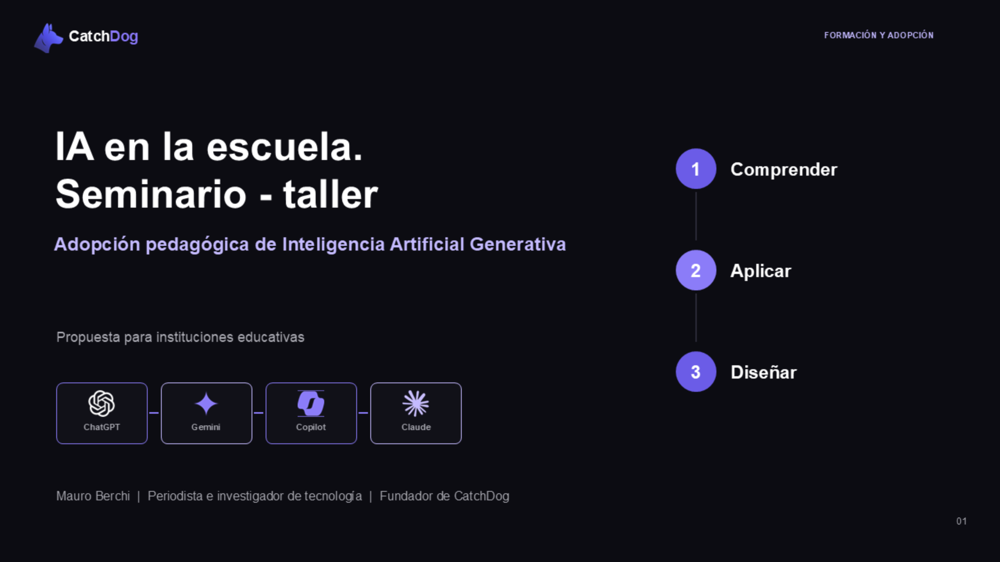

CatchDog Education
La IA ya está en la escuela.
Hagamos que sirva para aprender.
Acompañamos a las instituciones a formar docentes, acordar reglas claras y crear herramientas útiles para el aula y la gestión. La tecnología acelera; el criterio humano conduce.
Formación · Gobernanza · Soluciones a medida
CatchDog / Education
IA +Criterio humano
Aula y alumnos
Docentes
Dirección
Gestión
Tres formas de acompañarDe comprender la IA a incorporarla en toda la institución.
Cada escuela parte de un lugar distinto. Podemos empezar por las personas, por sus acuerdos o por un problema concreto que necesita una herramienta.
01 / FORMARCapacitación docente que se prueba en el aula
Explicamos cómo funciona la IA generativa y trabajamos con tareas reales. Cada docente aprende a analizar, crear, verificar y decidir cuándo una herramienta mejora el aprendizaje.
- Seminarios y talleres prácticos
- Diseño de materiales, actividades y evaluaciones
- Uso responsable de herramientas gratuitas o accesibles
02 / ACORDARGobernanza de IA para la comunidad escolar
Facilitamos acuerdos que orientan a docentes, alumnos y directivos: qué usos se permiten, cómo se declara la asistencia de IA y qué decisiones requieren siempre intervención humana.
- Criterios por edad, rol y tipo de actividad
- Autoría, evaluación y protección de datos
- Pilotos y revisión periódica de los acuerdos
03 / CONSTRUIRHerramientas a medida para enseñar y gestionar
Actuamos como socio externo para resolver necesidades específicas: aplicaciones pedagógicas, automatizaciones, tableros e integraciones que conectan áreas y sistemas existentes.
- Recursos de estudio y práctica personalizados
- Flujos de administración y contabilidad
- Indicadores y comunicación entre áreas
Nuestro principioHuman in the loop: personas dentro de cada decisión.
La escuela define los objetivos, aporta contexto, revisa los resultados y conserva la responsabilidad pedagógica. La IA puede ampliar el análisis y la producción, pero el trabajo educativo sigue siendo una relación humana.
✓Docentes: diseñan la actividad, comprueban fuentes y ajustan cada material al grupo.
✓Alumnos: usan la IA con propósitos explícitos y muestran qué hicieron ellos.
✓Institución: decide qué datos circulan, quién accede y cuándo se requiere autorización.
El proceso pedagógico completoLa IA puede aportar valor antes, durante y después de la clase.
No se reduce a pedirle respuestas a un chat. El docente puede usarla para comprender mejor una necesidad, diseñar una experiencia y observar qué sucedió.
01Diagnosticar
02Planificar
03Preparar
04Enseñar
05Acompañar
06Evaluar
07Reflexionar
En cada etapa: objetivo pedagógico → apoyo de IA → revisión humana → decisión docente.
Para el aulaUna misma idea, varias formas de aprender
Convertir un tema en una guía visual, preguntas graduadas y actividades de práctica; el docente selecciona y adapta.
Para la direcciónAcuerdos que se pueden aplicar
Definir cuándo puede usarse IA, cómo se reconoce su aporte y cómo cambia la evaluación según el objetivo.
Para la administraciónMenos trabajo repetitivo
Ordenar consultas, preparar comunicaciones y conectar registros autorizados para reducir pasos manuales.
Para la comunidadInformación que ayuda a decidir
Crear indicadores agregados sobre participación y procesos institucionales, con controles de acceso y privacidad.
Un primer paso posibleIA en la escuela. Seminario–taller.
Tres encuentros de dos horas para que el equipo docente deje atrás la confusión, pruebe usos valiosos y pueda diseñar un primer piloto con criterios propios.
01Comprender qué cambia y cómo funciona la IA generativa.
02Aplicarla en tareas docentes y en el proceso pedagógico.
03Diseñar acuerdos y un piloto institucional acotado.

Una muestra del material visual que llevamos al aula.Tecnología que se adaptaLa escuela no tiene que esperar un gran proyecto de software.
Las plataformas de gestión resuelven mucho. CatchDog puede conectarlas con nuevos circuitos o construir una herramienta liviana para el problema que sigue sin resolver. En desafíos acotados, este modo de trabajo puede acortar plazos y bajar el costo de entrada frente a un desarrollo tradicional.
01Escuchamos el circuito real
Qué hacen las personas, qué sistemas ya tienen, dónde se pierde tiempo y qué datos se pueden usar.
02Diseñamos un piloto pequeño
Una herramienta o automatización comprobable, con responsables humanos, límites claros y un costo proporcional.
03Probamos, corregimos y conectamos
Observamos el uso, mejoramos el flujo y, si aporta valor, lo integramos al resto de la institución.